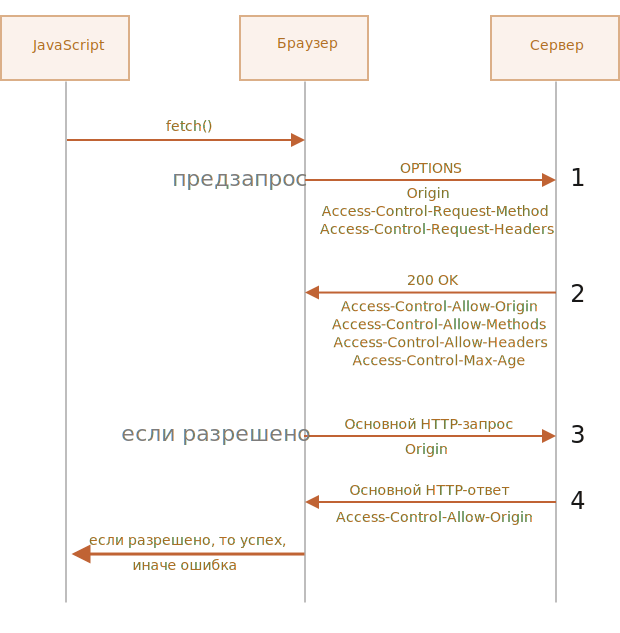

Fetch: запросы на другие сайты
Если мы сделаем запрос fetch на другой веб-сайт, он, вероятно, завершится неудачей.
Например, давайте попробуем запросить https://example.com:
try {
await fetch('https://example.com');
} catch(error) {
alert(error); // Failed to fetch
}
Вызов fetch не удался, как и ожидалось.
Ключевым понятием здесь является источник (origin) - комбинация домен/порт/протокол.
Запросы на другой источник - отправленные на другой домен (или даже поддомен), или протокол, или порт -
требуют специальных заголовков от удаленной стороны.
Эта политика называется «CORS»: Cross-Origin Resource Sharing («совместное использование ресурсов между
разными источниками»).
Зачем нужен CORS? Экскурс в историю
CORS существует для защиты интернета от злых хакеров.
Серьезно. Давайте сделаем краткое историческое отступление.
Многие годы скрипт с одного сайта не мог получить доступ к содержимому другого сайта.
Это простое, но могучее правило было основой интернет-безопасности. Например, хакерский скрипт
с сайта hacker.com не мог получить доступ к почтовому ящику пользователя на сайте gmail.com.
И люди чувствовали себя спокойно.
В то время в JavaScript не было методов для сетевых запросов. Это был «игрушечный» язык для украшения веб-страниц.
Но веб-разработчики жаждали большей власти. Чтобы обойти этот запрет и все же получать данные с других
сайтов, были придуманы разные хитрости.
Использование форм
Одним из способов общения с другим сервером была отправка туда формы <form>. Люди отправляли
ее в <iframe>, чтобы оставаться на текущей странице, вот так:
<!-- цель формы -->
<iframe name="iframe"></iframe>
<!-- форма могла быть динамически сгенерирована и отправлены с помощью JavaScript -->
<form target="iframe" method="POST" action="https://another.com/...">
...
</form>
Таким способом было возможно сделать GET/POST запрос к другому сайту даже без сетевых методов, так как
формы можно отправлять куда угодно. Но так как запрещено получать доступ к содержимому <iframe>
с другого сайта, прочитать ответ было невозможно.
Если быть точным, были трюки и для этого, требующие специального кода на странице и в ифрейме, так что
общение с ифреймом было технически возможно. Сейчас мы не будем вдаваться в подробности, пусть эти динозавры
покоятся с миром.
Использование скриптов
Еще один трюк заключался в использовании тега <script>. У него может быть любой
src, с любым доменом, например <script src="https://another.com/...">.
Это дает возможность загрузить и выполнить скрипт откуда угодно.
Если сайт, например another.com, хотел представить данные для такого доступа, он предоставлял
так называемый «протокол JSONP» (JSON with Padding).
Вот как он работал.
Например, нам на нашем сайте нужны данные с сайта https://another.com, скажем, погода:
-
Сначала, заранее, объявляем глобальную функцию для обработки данных, например
gotWeather.
// 1. Объявить функцию для обработки погодных данных
function gotWeather({temperature, humidity}) {
alert(`Температура: ${temperature}, влажность: ${humidity}`);
}
-
Затем создаем тег <script> с
src="https://another.com/weather.json?callback=gotWeather", при этом имя нашей функции -
в URL-параметре callback.
let script = document.createElement('script');
script.src = 'https://another.com/weather.json?callback=gotWeather';
document.body.append(script);
-
Удаленный сервер с another.com должен в ответ сгенерировать скрипт, который вызывает
gotWeather(...) с данными, которые хочет передать.
// Ожидаемый ответ от сервера выглядит так:
gotWeather({
temperature: 25,
humidity: 78
});
-
Когда этот скрипт загрузится и выполнится, наша функция gotWeather получает данные.
Это работает и не нарушает безопасность, потому что обе стороны согласились передавать данные таким образом.
А когда обе стороны согласны, то это определенно не хак. Все еще существуют сервисы, которые предоставляют
такой доступ, так как это работает даже для очень старых браузеров.
Спустя некоторое время в браузерном JavaScript появились методы для сетевых запросов.
Вначале запросы на другой источник были запрещены. Но в результате долгих дискуссий было решено разрешить их
делать, но для использования новых возможностей требовалось разрешение сервера, выраженное в специальных заголовках.
Простые запросы
Есть два вида запросов на другой источник:
-
Простые.
-
Все остальные.
Простые запросы будут попроще, поэтому давайте начнем с них.
Простой запрос - это запрос,
удовлетворяющий следующим условиям:
-
Простой метод:
GET, POST или HEAD.
-
Простые заголовки -
разрешены только:
Любой другой запрос считается «непростым». Например, запрос с методом PUT или с HTTP-заголовком
API-Key не соответствует условиям.
Принципиальное отличие между ними состоит в том, что «простой запрос» может быть сделан
через <form> или <script>, без каких-то специальных методов.
Таким образом, даже очень старый сервер должен быть способен принять простой запрос.
В противоположность этому, запросы с нестандартными заголовками или, например, методом DELETE
нельзя создать таким способом. Долгое время JavaScript не мог делать такие запросы. Поэтому старый
сервер может предположить, что такие запросы поступают от привилегированного источника, «просто потому,
что веб-страница неспособна их посылать».
Когда мы пытаемся сделать непростой запрос, браузер посылает специальные предварительный запрос
(«предзапрос», по англ. «preflight»), который спрашивает у сервера - согласен ли он принять такой непростой
запрос или нет?
И, если сервер явно не дает согласие в заголовках, непростой запрос не посылается.
Далее мы разберем конкретные детали.
CORS для простых запросов
При запросе на другой источник браузер всегда ставит «от себя» заголовок Origin.
Например, если мы запрашиваем https://anywhere.com/request со страницы
https:/javascript.info/page, заголовки будут такими:
GET /request
Host: anywhere.com
Origin: https://javascript.info
...
Как вы можете видеть, заголовок Origin содержит именно источник (протокол/домен/порт), без пути.
Сервер может проверить Origin и, если он согласен принять такой запрос, добавить особый заголовок
Access-Control-Allow-Origin к ответу. Этот заголовок должен содержать разрешенный источник
(в нашем случае https://javascript.info) или звездочку *. Тогда ответ успешен,
в противном случае возникает ошибка.
Здесь браузер играет роль доверенного посредника:
-
Он гарантирует, что к запросу на другой источник добавляется правильный заголовок Origin.
-
Он проверяет наличие разрешающего заголовка Access-Control-Allow-Origin в ответе и,
если все хорошо, то JavaScript получает доступ к ответу сервера, в противном случае - доступ запрещается
с ошибкой.

Вот пример ответа сервера, который разрешает доступ:
200 OK
Content-Type: text/plain; charset=UTF-8
Access-Control-Allow-Origin: https://javascript.info
Заголовки ответа
По умолчанию при запросе к другому источнику JavaScript может получить доступ только к так называемым
«простым» заголовкам ответа:
-
Cache-Control
-
Content-Language
-
Content-Length
-
Content-Type
-
Expires
-
Last-Modified
-
Pragma
При доступе к любому другому заголовку ответа будет ошибка.
Чтобы разрешить JavaScript доступ к любому другому заголовку ответа, сервер должен указать заголовок
Access-Control-Expose-Headers. Он содержит список, через запятую, заголовков, которые не являются
простыми, но доступ к которым разрешен.
Например:
200 OK
Content-Type: text/html; charset=UTF-8
Content-Length: 12345
Content-Encoding: gzip
API-Key: 2c9de507f2c54aa1
Access-Control-Allow-Origin: https://javascript.info
Access-Control-Expose-Headers: Content-Encoding,API-Key
При таком заголовке Access-Control-Expose-Headers, скрипту разрешено получить заголовки
Content-Encoding и API-Key ответа.
«Непростые» запросы
Мы можем использовать любой HTTP-метод: не только GET/POST, но и PATCH,
DELETE и другие.
Некоторое время назад никто не мог даже предположить, что веб-страница способна делать такие запросы.
Так что могут существовать веб-сервисы, которые рассматривают нестандартный метод как сигнал:
«Это не браузер». Они могут учитывать это при проверке прав доступа.
Поэтому, чтобы избежать недопониманий, браузер не делает «непростые» запросы (которые нельзя было
сделать в прошлом) сразу. Перед этим он посылает предварительный запрос, спрашивая разрешения.
Предварительный запрос использует метод OPTIONS, у него нет тела, но есть три заголовка:
-
Origin содержит именно источник (протокол/домен/порт), без пути.
-
Access-Control-Request-Method содержит HTTP-метод «непростого» запроса.
-
Access-Control-Request-Headers предоставляет разделенный запятыми список его
«непростых» HTTP-заголовков.
Если сервер согласен принимать такие запросы, то он должен ответить без тела, со статусом 200 и с
заголовками:
-
Access-Control-Allow-Origin должен содержать разрешенный источник.
-
Access-Control-Allow-Methods должен содержать разрешенные методы.
-
Access-Control-Allow-Headers должен содержать список разрешенных заголовков.
-
Кроме того, заголовок Access-Control-Max-Age может указывать количество секунд,
на которое нужно кешировать разрешения. Так что браузеру не придется посылать предзапрос для последующих
запросов, удовлетворяющих данным разрешениям.

Давайте пошагово посмотрим, как это работает, на примере PATCH запроса (этот метод часто
используется для обновления данных) на другой источник:
let response = await fetch('https://site.com/service.json', {
method: 'PATCH',
headers: {
'Content-Type': 'application/json',
'API-Key': 'secret'
}
});
Этот запрос не является простым по трем причинам (достаточно одной):
-
Метод PATCH.
-
Content-Type не один из: application/x-www-form-urlencoded,
multipart/form-data, text/plain.
-
Содержит «непростой» заголовок API-Key.
Шаг 1: предзапрос
Перед тем, как послать такой запрос, браузер самостоятельно генерирует и посылает предзапрос, который
выглядит следующим образом:
OPTIONS /service.json
Host: site.com
Origin: https://javascript.info
Access-Control-Request-Method: PATCH
Access-Control-Request-Headers: Content-Type,API-Key
Шаг 2: ответ метода на предзапрос
Сервер должен ответить со статусом 200 и заголовками:
Это разрешит будущую коммуникацию, в противном случае возникнет ошибка.
Если сервер ожидает в будущем другие методы и заголовки, то он может в ответе перечислить из все сразу,
разрешить заранее, например:
200 OK
Access-Control-Allow-Methods: PUT,PATCH,DELETE
Access-Control-Allow-Headers: API-Key,Content-Type,If-Modified-Since,Cache-Control
Access-Control-Max-Age: 86400
Теперь когда браузер видит, что PATCH есть в Access-Control-Allow-Methods,
а Content-Type,API-Key в списке Access-Control-Allow-Headers, он посылает наш основной
запрос.
Кроме того, ответ на предзапрос кешируется на время, указанное в заголовке Access-Control-Max-Age
(86400 секунд - один день), так что последующие запросы не вызовут предзапрос. Они будут отосланы сразу при условии,
что соответствуют закешированным разрешениям.
Шаг 3: основной запрос
Если предзапрос успешен, браузер делает основной запрос. Алгоритм здесь такой же, что и для простых
запросов.
Основной запрос имеет заголовок Origin (потому что он идет на другой источник):
PATCH /service.json
Host: site.com
Content-Type: application/json
API-Key: secret
Origin: https://javascript.info
Шаг 4: основной ответ
Сервер не должен забывать о добавлении Access-Control-Allow-Origin к ответу на основной запрос.
Успешный предзапрос не освобождает от этого:
Access-Control-Allow-Origin: https://javascript.info
После этого JavaScript может прочитать ответ сервера.
На заметку:
Предзапрос осуществляется «за кулисами», невидимо для JavaScript.
JavaScript получает только ответ на основной запрос или ошибку, если со стороны сервера нет разрешения.
Авторизационные данные
Запрос на другой источник по умолчанию не содержит авторизационных данных (credentials), под которыми
здесь понимаются куки и заголовки HTTP-аутентификации.
Это нетипично для HTTP-запросов. Обычно запрос к https://site.com сопровождается всеми
куки с этого домена. Но запросы на другой источник, сделанные методами JavaScript - исключение.
Например, fetch('https://another.com') не посылает никаких куки, даже тех (!), которые принадлежат
домену another.com.
Почему?
Потому что запрос с авторизационными данными дает намного больше возможностей, чем без них. Если он разрешен,
то это позволяет JavaScript действовать от имени пользователя и получать информацию, используя его авторизационные
данные.
Действительно ли сервер настолько доверяет скрипту? Тогда он должен явно разрешить такие запросы при помощи
дополнительного заголовка.
Чтобы включить отправку авторизационных данных в fetch, нам нужно добавить опцию
credentials: 'include', вот так:
fetch('https://another.com', {
credentials: 'include'
});
Теперь fetch пошлет куки с домена another.com вместе с нашим запросом на этот сайт.
Если сервер согласен принять запрос с авторизационными данными, он должен добавить заголовок
Access-Control-Allow-Credentials: true к ответу, в дополнение к Access-Control-Allow-Origin.
Например:
200 OK
Access-Control-Allow-Origin: https://javascript.info
Access-Control-Allow-Credentials: true
Пожалуйста, обратите внимание: в Access-Control-Allow-Origin запрещено использовать звездочку
* для запросов с авторизационными данными. Там должен быть именно источник, как показано выше.
Это дополнительная мера безопасности, чтобы гарантировать, что сервер действительно знает, кому он
доверяет делать такие запросы.
Итого
С точки зрения браузера запросы к другому источнику бывают двух видов: «простые» и все остальные.
Простые запросы должны
удовлетворять следующим условиям:
Основное их отличие заключается в том, что простые запросы с давних времен выполнялись с использованием
тегов <form> или <script>, в то время как непростые долгое время были
невозможны для браузеров.
Практическая разница состоит в том, что простые запросы отправляются сразу с заголовком Origin,
а для других браузер делает предварительный запрос, спрашивая разрешения.
Для простых запросов:
-
→ Браузер посылает заголовок Origin с источником.
-
← Для запросов без авторизационных данных (не отправляются по умолчанию) сервер должен установить:
-
← Для запросов с авторизационными данными сервер должен установить:
Дополнительно, чтобы разрешить JavaScript доступ к любым заголовкам ответа, кроме Cache-Control,
Content-Language, Content-Type, Expires, Last-Modified
или Pragma, сервер должен перечислить разрешенные в заголовке Access-Control-Expose-Headers.
Для непростых запросов перед основным запросом отправляется предзапрос:
-
→ Браузер посылает запрос OPTIONS на тот же адрес с заголовками:
-
← Сервер должен ответить со статусом 200 и заголовками:
-
Access-Control-Allow-Methods со списком разрешенных методов.
-
Access-Control-Allow-Headers со списком разрешенных заголовков.
-
Access-Control-Max-Age с количеством секунд для кеширования разрешений.
-
→ Затем отправляется основной запрос, применяется предыдущая «простая» схема.